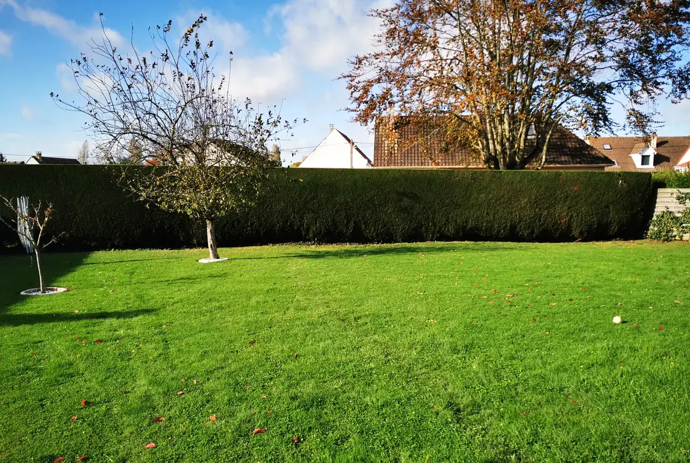
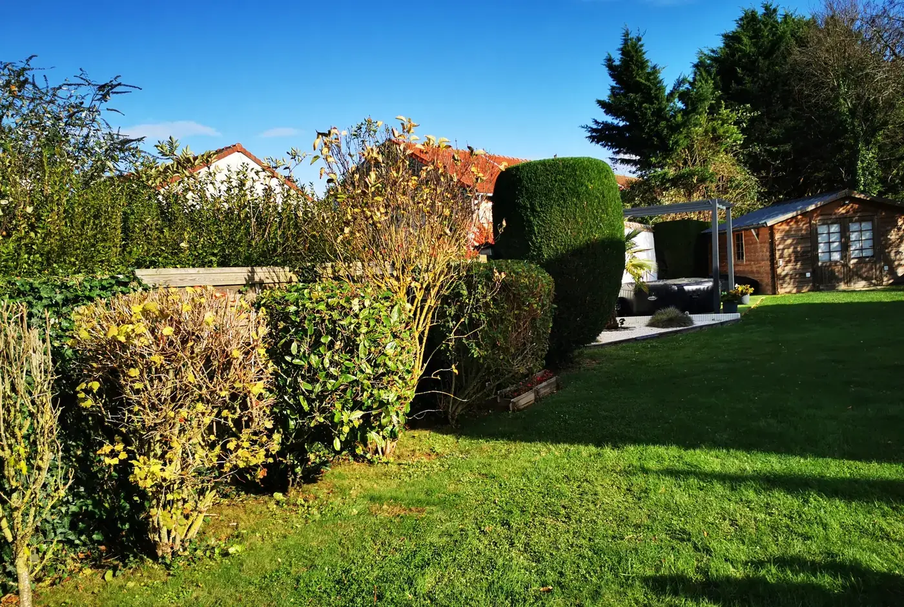
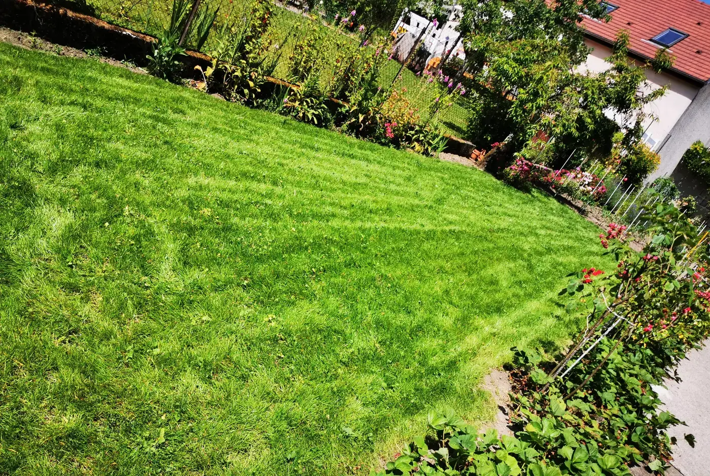

Votre site vitrine
Les Clayes du Jardin 77
Un particulier ou un syndic qui cherche un paysagiste à Claye-Souilly compare vite : qui a l’air le plus sérieux, qui répond le plus simplement. Un site clair vous donne cette première impression.
Ce que comprend votre site
- Un site vitrine professionnel
- La galerie de vos réalisations
- Un formulaire de contact
- Votre fiche Google Maps reliée au site
- En ligne sous 48 h après réception de vos éléments
La mise en avant de vos chantiers
Voici le genre de mise en avant possible pour vos réalisations.



Ces photos ne sont pas les vôtres. Elles montrent seulement la présentation. Vos futures réalisations prendront leur place sur votre site.
Pour voir votre vrai site
Envoyez-nous trois choses, et vous recevez votre site complet sous 48 h.
- 1 Votre logo, s’il existe — sinon votre nom suffit
- 2 Trois photos de vos chantiers
- 3 Les communes où vous intervenez
Ou répondez simplement au message par lequel vous avez reçu ce lien.